VFF basic explanation
- Targets generate an attractive force on the robot (green)
- Obstacles generate a repulsive force on the robot (red)
- Adding them with weights you get a vector that guides the robot correctly (black)

Repulsive vector
In order to calculate the repulsive vector, each laser measure has to be scaled according to the distance measured, and then all of them are added up.
A hyperbole is in charge of scaling each measure:

The closer the obstacle is, the more it influences the sum, but with two thresholds: if its to far, it returns 0. If it is in a certain close range, it returns the same large value(does not tend to infinite). Moreover, I only kept the part of the vector that is perpendicular to the direction of movement. The other component is set to 0.
Atractive vector
In order for atractive vector to be calculated, the absolute coordinates of the car must be subtracted from the absolute coordinates of the goal, and if the new coordinate system is rotated, then the vector has to be rotated with opposite sign, to take that into account.
Then, the resulting value has to be scaled properly, using the following function:

Total vector
Once the vectors have been calculated, they are added with a individual weight. This constants, like everything else, have to be tweaked through trial and error.
Now we have a vector that indicates where the robot should go, but the car actuators don't understand it, so we need to interpret it and send the correct commands to the car (velocity commands).
Commanding to the motors
Linear velocity: since we always want to go forward, we hold it constant.
For the angular velocity, first I calculated the angle between the computed vector and the vector that points to the currect direction of the car. Then I thought of passing it to a linear function that returned the angle velocity, but it performed poorly so I swithed to a pd controller, where the error was the angle previously mentioned.
The problem
The car kept crashing with the second car. The problem was that it considered the objectives achieved from too far away, so I changed that for the beginning of the simulation.
Final result
In case is too fast, the pov at real time: